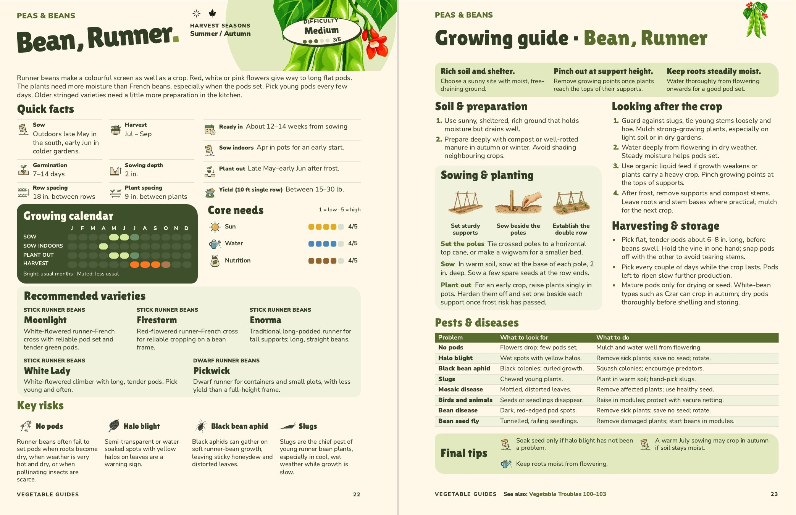

Runner Bean
Pages 22–23, amended 5 November. Quick facts now includes Yield (10 ft single row): Between 15–30 lb. The metric edition reads “Between 7–14 kg.” under Yield (3 m single row).
This is an estimated seasonal yield, calculated from roughly 13 plants at the guide’s spacing and research reporting about 0.5–1 kg per climbing plant. A double row would give roughly twice as much. The source data has been updated with the evidence and calculation.
Quick facts are regrouped to fit the additional entry. The routine lime/pH sentence is removed under the standing crop-review guidance. Both pages retain their artwork, text sizes, five varieties and all eight pest entries.

Approved by John on 5 November. Both editions have been checked as actual PDFs; the main book remains separate.